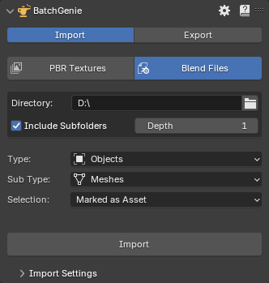

Importing¶
Importing is done through the BatchGenie main panel found in the 3D Viewport. Currently, there are two types of imports available: PBR Textures and Blend Files. The PBR Texture option imports PBR texture sets from a folder and compiles them into ready-to-use materials. The Blend File option allows you to import objects, collections, and materials from multiple blend files at once.
Import PBR Textures¶

- Open the main BatchGenie panel.
- Go to the
Batch Import PBR Texturesection. - Select the folder containing your textures.
- If you need to make any adjustments, click on the
Import Settingstab. Otherwise, proceed to the next step. - Click on
Import, and BatchGenie will automatically import and set up the textures for you.
{kind=link}
Import Settings¶
General Settings¶
- Include files in root: Import textures located directly in the root of the selected folder, which can contain any number of mixed textures.
-
Include Subfolders: Import textures from subfolders within the selected folder, where each subfolder contains one distinct set of textures.
- Subfolder Traversing Depth: Specify how many levels deep to search for subfolders when importing. For example, a depth of 1 means only the immediate subfolders within the selected folder will be searched. Adjust this setting to control the folder depth for more complex directory structures.
Example diagram of traversing
graph TD A[Main Folder] A --> B[Subfolder Level 1] B --> C[Subfolder Level 2] C --> D[Subfolder Level 3] B --> E[Another Subfolder Level 2] E --> F[Subfolder Level 3] A --> G[Another Subfolder Level 1] -
Skip existing: Do not import materials if a material with the same name already exists.
- Use Fake User: Use Fake User on imported materials. Ensures that imported materials are saved with your project, even if they're not currently in use. This prevents them from being automatically removed when you save your file.
- Mark as Asset: Marks imported materials as Assets, making them easily accessible in Blender's Asset Browser for future use.
- Pack Textures: When enabled, textures are packed into the .blend file during import. This ensures that all textures are embedded within the file, making it self-contained and portable.
- DirectX Normals: If your materials use DirectX normals but this isn't indicated in their filenames(and the add-on's DirectX detection isn't recognizing them), enable this option to add a 'DirectX to OpenGL' node for normal conversion. See Preferences to adjust this function.
-
Alpha from Base Color: Use the Alpha channel from the 'Base Color' texture and ignore separate Alpha textures. Options include:
- No
- Auto: Tries to automatically detect the presence of data in the alpha channel, but with a significant processing time impact. See the info box below for details.
- Force On: Does not check for the presence of an alpha channel but connects it regardless.
Autodetect Alpha
With the 'Auto' setting, BatchGenie will check the 'Base Color' texture and try to detect data in its Alpha channel. Since there is no built-in function in Blender to do this, BatchGenie examines the pixels in the alpha channel (present in images that support it, even if empty) to see if there is usable data. While this process is effective, it significantly increases processing time.
With the 'Force On' setting, no extra processing is done since the alpha socket will be connected regardless. This is the best option if you know your textures use alpha from the albedo texture.
Extra Processing Time
Extra processing time per material depending on texture resolution:
- 2K: 0.4~sec
- 4K: 1~sec.
- 8K: 4~sec.
- 16K: 20~sec.
Benchmark performed with PNG files on an Intel i7-14700K CPU. While this additional time might seem minor, it becomes significant when compared to the setting being disabled. For example, without this setting enabled, importing a folder with 183 different 4K and 8K texture sets, totaling 725 images and weighing 50GB, takes only 3 seconds.
-
Filter: Filter out unwanted textures. Example usage would be to filter out DirectX normal maps by using the filter 'DirectX' or 'DX'.
Material Settings¶
- Displacement: Sets the displacement setting of the imported materials. Choose
Bump Onlyfor surface texture simulation,Displacementfor actual geometric displacement, orDisplacement & Bumpfor a combination of both effects. - Eevee Specific Settings:
- Render Method
- Transparent Shadows
- Raytrace Transmission
For further technical details see this section in the Blender manual.
Image Texture Node Settings¶

- Mapping: The dropdown menu allows you to select the texture mapping method for the textures. Options include
UV,Object, andNone. Upon selection, the add-on automatically adds the corresponding Texture Coordinate and Mapping nodes to the material. - Texture Interpolation: Adjust the interpolation method for image texture nodes. This setting controls how textures are sampled and smoothed. Options include Blender's default options.
There are two selections: the 'default' option, applied to all textures except displacement, and a separate setting specifically for displacement textures. - Projection: The 'Projection' option allows you to choose and adjust the texture projection method for the material. Options include Blender's default methods. For 'Box' projection, there will also be a 'Blend' amount slider available.
- Texture Extension: Defines how the image is extrapolated past its original bounds. Options include Blender's default methods.
For further technical details about texture Interpolation, Projection & Extension see the this section in the Blender manual.
Replace Principled BSDF¶
Use a custom Node Group instead of a Principled BSDF for imported materials. This allows for precise material customization during the import process to fit your needs. The interface provides a dropdown that lists all Node-Groups in the current Blend file.
BatchGenie searches for keywords to match and connect sockets in the new Node Group, allowing some flexibility in socket naming. However, sockets should still be named in a way that clearly indicates their purpose. For example, a socket for a roughness texture should include the word "roughness", but additional keywords are allowed, such as "roughness surface". See the example image below.
Tips
If the Node Group contains a socket named "Normal Color", BatchGenie will connect the Normal Map texture directly to this socket, bypassing the Normal Map node. Similarly, if the socket is named "Bump Height", BatchGenie will connect the Bump texture directly to this socket, bypassing the Bump node.
{kind=link}
Custom Attributes¶
Set one or multiple socket attributes such as color or values during import.
BatchGenie automatically finds the sockets of the Principled BSDF (or from your chosen custom Node-Group) and shows what type of values you can set. For example, you could set the IOR value for each imported material to a specific value, or use the random-number function to populate a seed number socket. You can set up to 4 attributes during import, and if you need more, you can use the Change Node Attributes utility afterward.
Attribute Types:
- Color: Set a specific color.
- Value: Set a specific value.
- Random Integer: Set a randomly generated number as the value.
- Random Float: Set a randomly generated number with 5 decimals as the value. Example: 3.14159
- Boolean: True / False.
For both Random Integer and Random Float, you can specify the range for the randomly generated values.
Texture Type Settings¶
Here you can choose which texture types to import. Usually, having everything enabled works great, and the add-on has logic to avoid importing duplicates of similar maps. The following texture types also have strength adjustment settings that you can configure during import: Normal, Bump, Ambient Occlusion, Cavity & Displacement.
- If both Roughness and Gloss textures are found, the gloss will be ignored.
-
If a packed texture is found, it takes priority over separate maps. For example, if a packed ARM texture (AO/Roughness/Metallic) is found alongside separate AO, Roughness, and Metallic textures, the ARM texture will be kept and the separate textures will be ignored.
-
The Ambient Occlusion & Cavity maps will be connected to a 'Mix Color' node alongside the diffuse map. The 'Mix Color' node is set to multiply, controlling the strength of the effect. If both types of maps are found, they will be connected in series.
Custom Texture
This option allows you to import and connect up to three custom textures, giving you the flexibility to add any additional maps that suit your specific needs.
- Keyword(s): Enter one or more keywords separated by spaces to search and identify your custom textures during the import process. Case-insensitive.
- Texture Type:
- Standard: Connects the texture using the conventional method, linking the color & Alpha outputs to your chosen sockets.
- Packed: Used for textures where multiple maps are combined into one file. This option separates the texture into individual R, G, B, and A channels, connecting each to different sockets. Most packed maps use RGB channels, but some utilize all four.
- Connect to:
- For Standard textures, choose from a dropdown featuring sockets in the Principled BSDF shader. If a custom Node-Group is selected in previous settings, the dropdown will display sockets from that group instead.
- For Packed textures, four dropdowns appear for the R, G, B, and A channels, allowing you to assign each channel to different sockets.
- Color Space: The Color Space of the image, either 'Color' for images with color or 'Non-Color' for everything else.
Custom Texture Example
So in this example BatchGenie will look for any images that contain the words 'Translucency' or 'Scattering' and connect them to a socket named 'Translucent Map' from a custom Node-Group.
Import Blend Files¶
The Blend Files option allows you to import objects, collections, and materials from multiple blend files at once. This feature is designed to streamline asset management by letting you quickly gather specific asset types from various blend files into your current project.

- Directory: The directory from which BatchGenie should locate Blend files.
-
Include Subfolders: If
enabled, imports will also include files from subfolders within the selected folder. Ifdisabled, only files directly in the selected folder will be processed.- Subfolder Traversing Depth: Specify how many levels deep to search for subfolders when importing. For example, a depth of 1 means only the immediate subfolders within the selected folder will be searched. Adjust this setting to control the folder depth for more complex directory structures.
Example diagram of traversing
graph TD A[Main Folder] A --> B[Subfolder Level 1] B --> C[Subfolder Level 2] C --> D[Subfolder Level 3] B --> E[Another Subfolder Level 2] E --> F[Subfolder Level 3] A --> G[Another Subfolder Level 1]
- Type: Type of Asset to import.
- Object
- Collection
- Material
- Textures
- Images
- Worlds
- Scenes
- Nodes
- Sub Type: Provides finer control by letting you specify the exact type of Asset to import (applicable only for Objects and Nodes).
- Object:
- All: Includes all types of objects.
- Meshes
- Curves
- Metaballs
- Text
- Grease Pencils
- Armatures
- Lattices
- Lights
- Cameras
- Nodes:
- All
- Shader Node Groups: Shader and World Node Groups
- Geometry Node Groups
- Geometry Node Trees: Includes the entire geometry node tree, including all node groups inside it.
- Compositing Node Groups
- Object:
- Selection: Allows you to specify which items to include in the import.
- Marked as Asset
- NOT marked as asset
- All
Import Settings¶
- Skip existing: Do not import if an Asset with the same name already exists.
- Use Fake User: Use Fake User on imported items. Note: This cannot be disabled to ensure data integrity.
- Modify Imported Asset Names: Add a prefix (a set of characters placed before the name) or a suffix (a set of characters placed after the name) to the names of imported Assets.
- Asset status:
- Keep current: Keeps current Asset status.
- Mark as Asset: Marks the Imported items as Assets, making them easily accessible in Blender's Asset Browser for future use.
- Clear Asset: Clears the Asset mark.
- Add Metadata: Description, License, Copyright & Author
Tip
You can cancel the operation at any time by pressing the ESC key.
FAQ¶
Texture Import related¶
How should the texture folder structure look?-
Supports a mix of subfolders and files, allowing processing of textures located in both the root folder and subfolders. While the root folder can contain any number of textures mixed together, subfolders should be used to organize distinct sets of textures.
What if there is an issue finding the appropriate connection for a texture?-
If this occurs, BatchGenie will create a frame with reroute node points for all unconnected textures within the material. From here, you can easily reconnect or delete the textures as needed. This scenario may occur, for example, when utilizing custom Node-Groups instead of the Principled BSDF, and the custom Node-Group lacks certain socket inputs for the textures discovered.
Tip
The Find Unconnected Nodes utility can assist you to find these issues.
Unconnected Textures Example
In the the example below you can see a scenario where BatchGenie has not been able to connect the 'Base Color' & 'Metallic' textures and has created some extra info nodes. You can also use the Clean File utility to batch remove these from all your materials if needed.

How are DirectX & OpenGL normal maps handled?-
BatchGenie attempts to identify the type of normal map by examining the texture names, which you can configure in the Preferences. If your normal maps do not indicate their format, I highly recommend this guide over at texturecan.com for help in identifying your maps.
How fast is the importer?-
With default settings, importing a folder containing 183 different 4K and 8K texture sets (a total of 725 images and 50GB) takes under 3 seconds. The 'Alpha from Base Color' setting is one of the factors that can significantly reduce speed. You can read more about this in the General Settings section. Benchmark performed on an Intel i7-14700K CPU.
What image formats are supported?-
All image formats supported by Blender are supported by BatchGenie. If you need to import textures in less common formats, check the Use Extended Formats option in the Preferences.
Blend File Import related¶
How should the folder structure look?-
No specific structure is required. Blend files can be located directly in the selected folder or within subfolders at multiple levels.
More adjustments in Preferences¶
See the add-on Preferences for more settings related to importing.